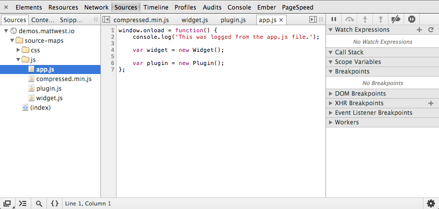
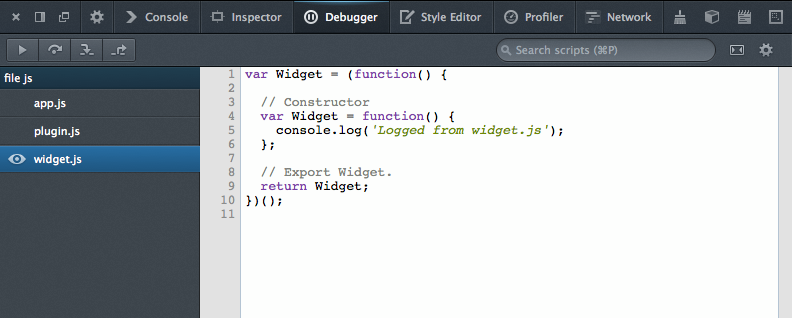

Source Maps Demo
- Open the developer tools.
- Switch to the Sources tab (Debugger tab in Firefox).
- Open the files pane and inspect the original source files!

Chrome Developer Tools

Firefox Developer Tools
Chrome users may need to enable support for source maps. Open the developer tools settings and ensure that Enable JS source maps and Enable CSS source maps are both ticked.